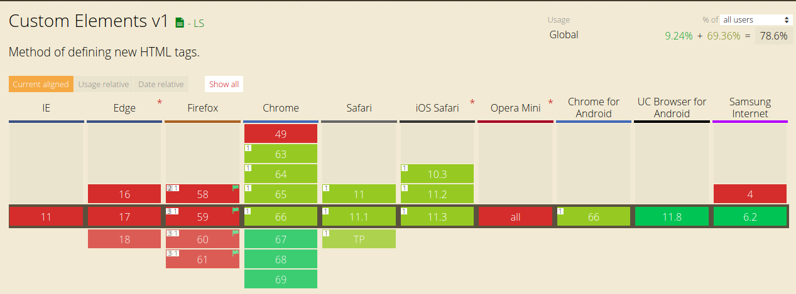
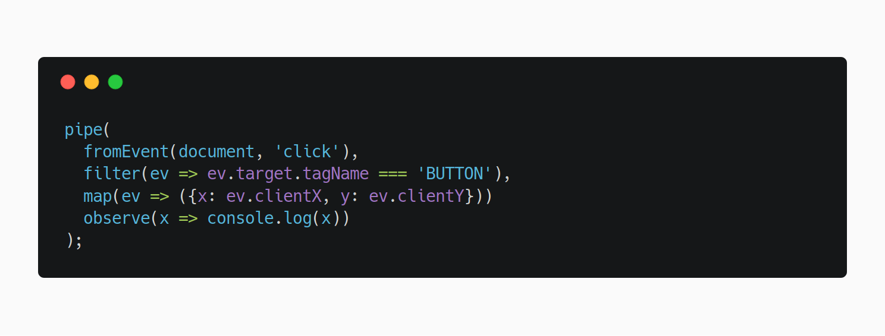

The vanilla way
Who am i?
Front-end engineer @ Immobiliare.it
Functional programming enthusiast
Safari hater
Front-end development in 2018
- Javascript & the browsers API are improved alot
- There are a tons of tools for compiling & optimize code
- Performance budgets has become almost necessary
Mainstream frameworks
- Essential for develop complex web applications
- If you need SSR for SEO, it can be very complex & costly
- Mantain versions updated can became a cost
A vanilla web app
Define UI and all it's mutations by using directly the platform
Why?
- To make lightweight apps that loads instantly
- Easier & cheaper SSR
- Browsers API never breaks
Trade-offs
- You have to implement every DOM mutation
- Cross browser compatibility
- There isn't a standard way to write vanilla applications
How can be designed a vanilla web application?
Let's start from building blocks
<Custom-Elements>
The native way to define your own elements in HTML
<Custom-Elements>
Very reusable (even across frameworks)
Good for generic components (like autocompletes, galleries, maps, moles, ...)
What about support?
The polyfill can be conditionally loaded! (link to the gist)
Functional components
Simple, lightweight & powerful
What makes a function a "Functional component?"
- It isn't a class
- Takes an element as input
- Manipulate only the input element and it's subtree
Lives: 3 Score: 0
State management
Putting state in closures may duplicate the source of truths
Let's try to use the DOM as state holder
What about performance?
Measure, then optimize
It's better to optimize tha small number of cases than everything
State transitions
Let's use Callbag!
Callbag
"A standard for JS callbacks that enables lightweight observables and iterables with a decentralized implementation"
Why we need callbag?
- Observables can be very good to transform events in data
- Light (few memory allocations and small size)
- Modular & easy to create your own utilities
Lives:
Time for another demo
This presentation is 100% vanilla js!
My Vanilla Way (fast recap)
- Custom-Elements and some functions as building blocks
- Place some state into the DOM to avoid inconsistencies
- Use Callbags to simplify some parts of state management
Useful links
- Web components loader https://github.com/webcomponents/webcomponentsjs
- My custom elements loader https://github.com/webcomponents/webcomponentsjs
- Callbags repo https://github.com/callbag/callbag
- Presentation https://github.com/callbag/callbag
That's all folks!
Any questions?